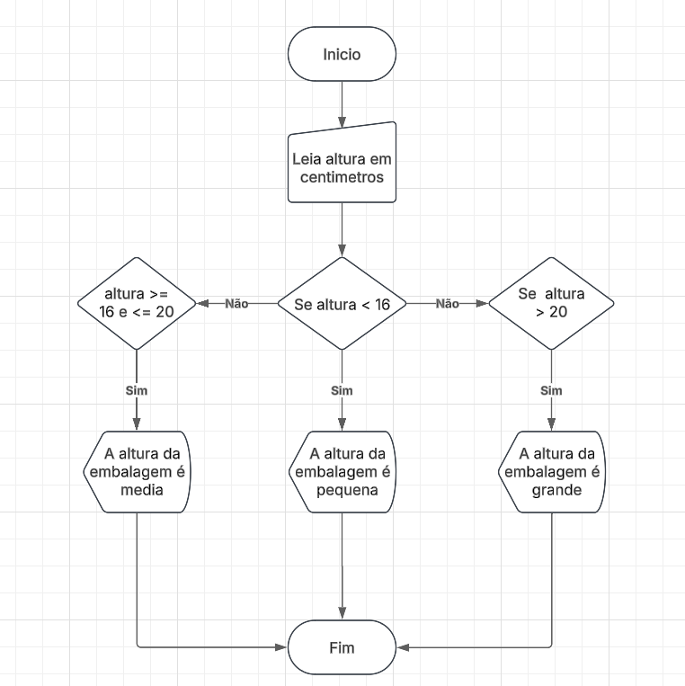
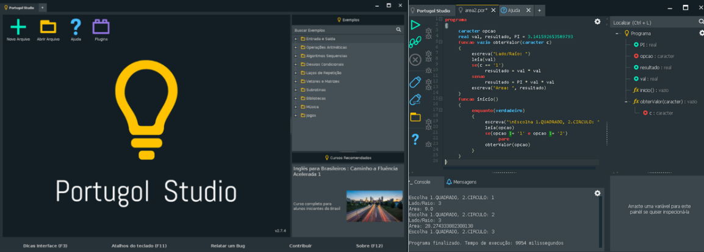

.png)
Introdução:
A lógica Computacional é essencial para quem deseja aprender a criar programas de computador. Ela envolve a capacidade de organizar ideias e transformá-las em uma sequência de passos lógicos para resolver problemas. Para isso, utilizam-se ferramentas como fluxogramas, algoritmos e linguagens de apoio como o Portugol, que ajudam a compreender como os programas funcionam por dentro.
O que são fluxogramas?
Os fluxogramas são representações gráficas que mostram o passo a passo de um processo ou algoritmo. Eles utilizam símbolos padronizados para indicar o início, o fim, as decisões, as entradas e as saídas de dados. As setas conectam esses símbolos, indicando o caminho que o programa deve seguir. Essa ferramenta facilita o entendimento da lógica antes da criação do código e ajuda a identificar possíveis erros.
Exemplo de Fluxograma:
Qual a sua simbologia básica?
O fluxograma é uma representação visual de um processo, mostrando suas etapas por meio de símbolos padronizados. O oval indica início ou fim, o retângulo representa ações, o losango mostra decisões, o paralelogramo indica entrada ou saída de dados e as setas apontam o caminho a seguir. Ele facilita o entendimento e a organização das atividades. Em resumo, o fluxograma é uma ferramenta essencial para visualizar e compreender processos, tornando o trabalho mais organizado, eficiente e fácil de analisar.
O que são algoritmos?
Um algoritmo é um conjunto de instruções ordenadas e finitas que descrevem como realizar uma tarefa ou resolver um problema. Em outras palavras, é o raciocínio lógico que guia o funcionamento de um programa. Eles estão presentes em diversas situações do dia a dia, como em receitas, instruções de uso e, principalmente, em softwares, aplicativos e sistemas digitais.
Onde são usados?
Os algoritmos são usados em praticamente todas as áreas da tecnologia e da ciência para resolver problemas, tomar decisões e automatizar tarefas. Eles estão presentes em programas de computador, redes sociais, sistemas de busca, inteligência artificial, robótica, finanças, medicina e educação, organizando dados, executando cálculos e guiando o funcionamento de máquinas e softwares no dia a dia.
O que é o portugol? O que é o Portugol Studio?
O Portugol é uma linguagem de programação didática que utiliza palavras em português, tornando o aprendizado da lógica mais acessível para iniciantes. Ele permite criar programas de forma simples, sem a complexidade das linguagens profissionais. O Portugol Studio é o ambiente onde os programas em Portugol são escritos e executados. Ele oferece recursos visuais, como a geração automática de fluxogramas, o que facilita a compreensão do funcionamento de cada algoritmo.
Imagem do Portugol Studio:

O que são variáveis e constantes?
As variáveis são espaços na memória do computador usados para armazenar valores que podem mudar durante a execução do programa, como nome, idade ou nota. Já as constantes armazenam valores fixos que não se alteram, como o número π (3.14). Essa distinção garante organização e segurança no código, evitando alterações indevidas de valores importantes.